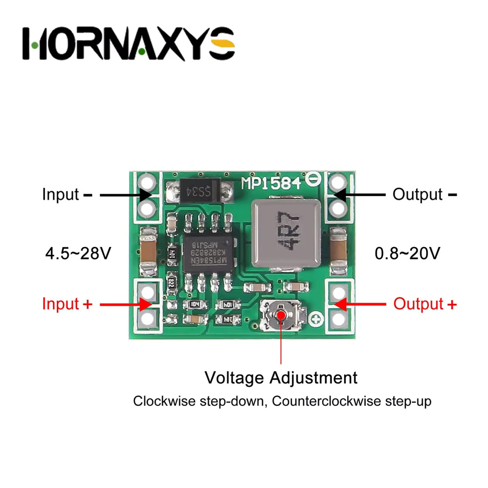
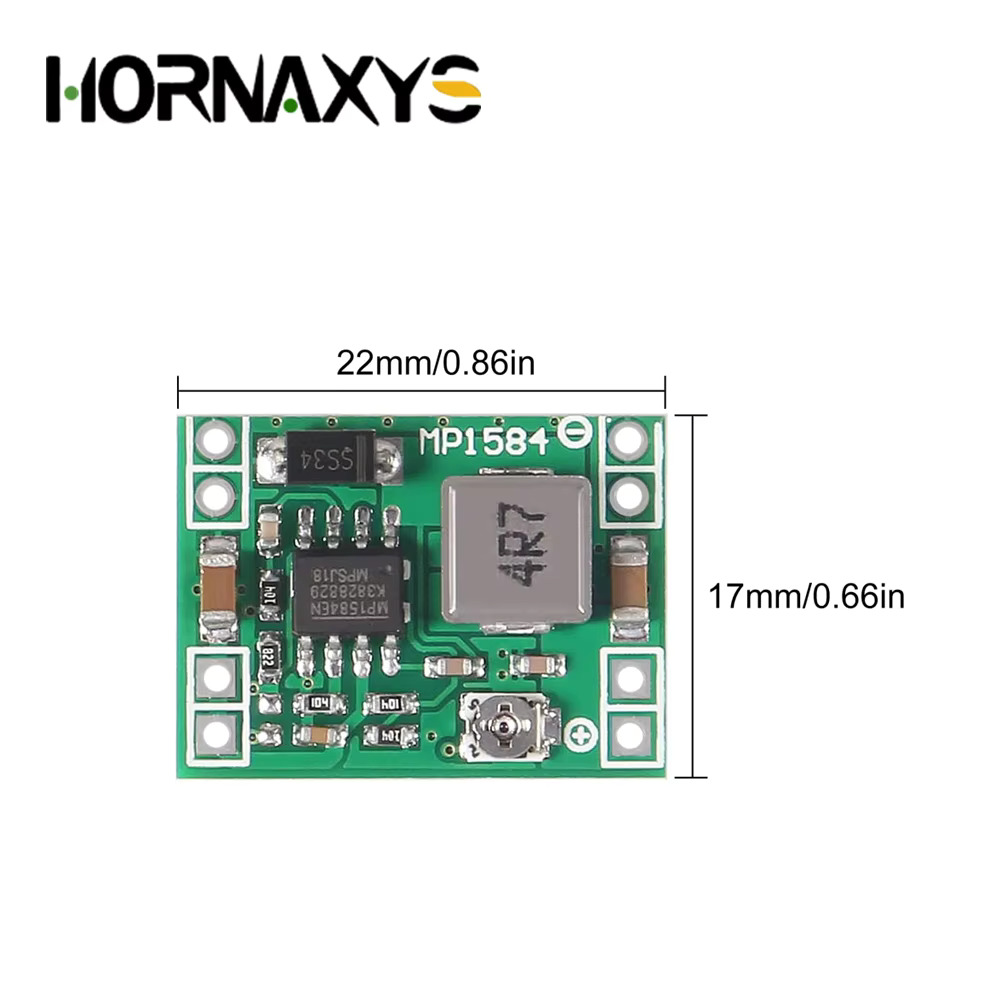
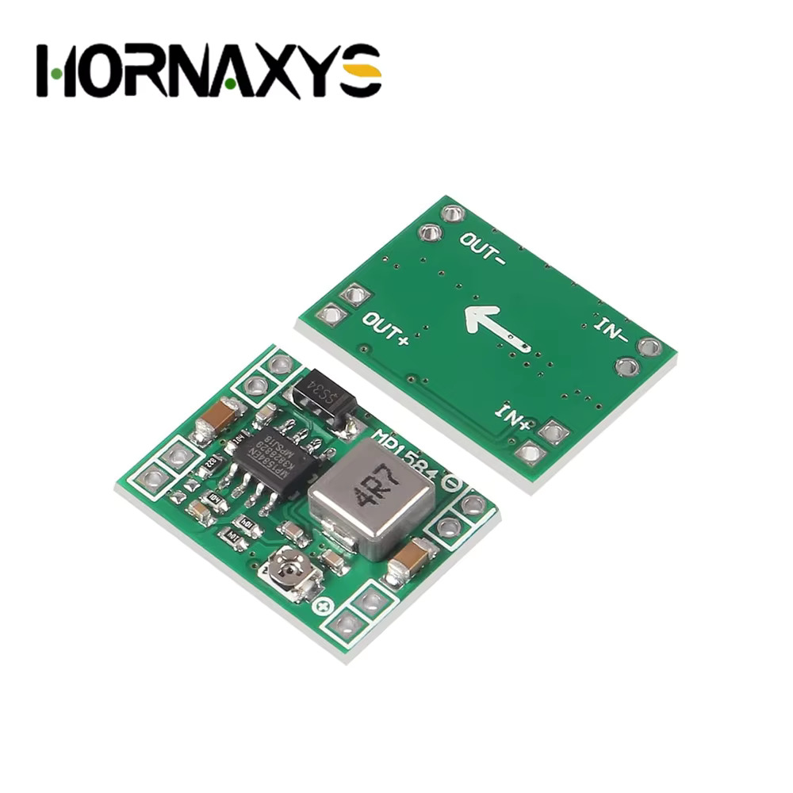

P1
MP1584EN adjustable buck (step-down) converter module
untested×5New-bought stock, a tiny adjustable switching regulator board — a common
LM2596-alternative built around the Monolithic Power Systems MP1584EN
(SOP-8), a higher-frequency synchronous-ish buck IC that lets the board run much
smaller than an LM2596 design for the same output current.
- Board 22 × 17 mm. Four pads per side:
IN+/IN−on one edge,OUT+/OUT−on the opposite edge (labeled on both the front annotation and the bare back-side silkscreen, which also prints an arrow for current direction). - Input 4.5–28 V. Output adjustable via the onboard trimpot — clockwise steps the output down, counterclockwise steps it up, per the seller's own diagram.
- Output range: the seller's listing states 2–20 V, but the board's own printed diagram says 0.8–20 V — 0.8 V matches the MP1584's native feedback reference, so treat the low end below ~2 V as achievable but not necessarily as clean or well-regulated as the listing implies.
- Rated output current: 3 A max. Switching frequency up to 1.5 MHz (~1 MHz typical). Output ripple <30 mV. Efficiency up to 96%. Operating range −40°C to +85°C — all per the seller's spec sheet, not yet independently checked.
- Visible components: the MP1584EN itself, a shielded power inductor marked
4R7(4.7 µH), anSS34Schottky diode (3 A/40 V class), a few ceramic caps, and the blue multi-turn trimpot that sets the feedback divider (and so the output voltage). - No obvious reverse-polarity protection on the input — wire it carefully.
- Likely use here: stepping a higher-voltage source (e.g. the B1/B2 packs, or the M1 motors' 22 V rail) down to a clean logic rail (5 V, 3.3 V) for boards like the D2 DRV8833 or a microcontroller, rather than driving motors directly.
To verify:
- Set the output voltage with a multimeter under no load before connecting anything — the trimpot ships at an arbitrary factory position, not a known default
- Confirm real clean output current at the Vin/Vout we actually use (3 A is a datasheet ceiling; expect derating without a heatsink or airflow)
- Check ripple with a scope at the intended load, not just the datasheet figure
- Decide a mounting method — the four corner pads are unplated, not threaded holes
{kind=link}

{kind=link}

{kind=link}
